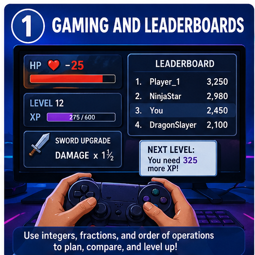
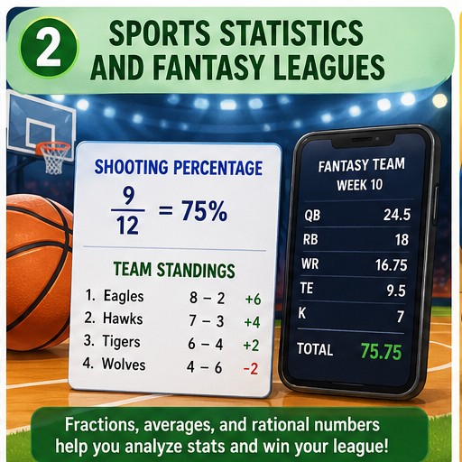
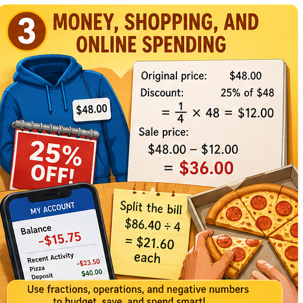
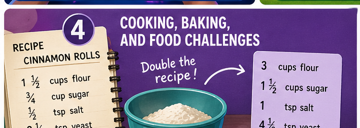
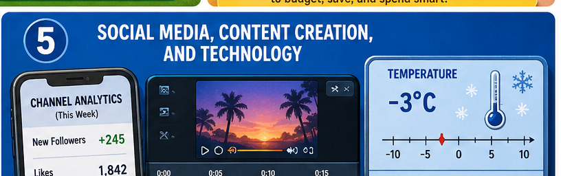

Gaming & Leaderboards
Many video games use integers and fractions without you even noticing. Health points can go below zero, temperatures in survival games may use negative numbers, and upgrades often multiply damage by fractions or decimals. Order of operations helps players compare gear, plan strategies, and figure out how much XP they need to level up.

Sports Statistics & Fantasy Leagues
Basketball shooting percentages, baseball batting averages, and football rankings all involve fractions and rational numbers. A player who makes 9 out of 12 shots has a shooting percentage based on fractions. Fantasy sports players compare stats, averages, and point totals to decide who to draft or trade.

Money, Shopping & Online Spending
Sales, discounts, taxes, and splitting costs with friends all use fractions and rational numbers. If a hoodie costs $48 and is 25% off, students can use fraction and order-of-operations skills to find the final price. Negative numbers also appear in bank balances, gift cards, and budgeting apps.

Cooking, Baking & Food Challenges
Recipes use fractions and mixed numbers all the time. If a recipe needs 1 1/2 cups of flour but you want to double it, you need operations with mixed numbers. Cooking videos and food trends often require adjusting recipes for different numbers of people.

Social Media, Content Creation & Technology
Content creators track follower growth, likes, and watch time using numbers, ratios, and averages. Video editing and music apps use timelines divided into fractions of seconds. GPS maps and weather apps use negative numbers and number lines to show location, elevation, and temperature.